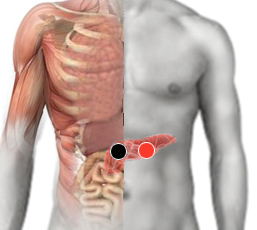

Intoxicación por metales
Pares
cabeza de páncreas - páncreas
lóbulo post. hígado - riñón*

NOTA: El Par lóbulo posterior del hígado - riñón también es llamado "Puebla".
Generalidades:
Los metales más tóxicos son los más pesados como el plomo y el mercurio. Actualmente la intoxicación por plomo es poco frecuente porque se ha eliminado de muchos productos; sin embargo hay estudios que afirman que actualmente tenemos 400 veces más plomo en los huesos que en la antigüedad. Las personas que trabajan en ciertas industrias tienen mayor riesgo de contaminación.
Transmisión
Pescados y mariscos, amalgamas de mercurio, exposición en la industria.